Диск, документы, шаблоны и база знаний
Этот модуль учит управлять документами и знаниями в Битрикс24 так, чтобы команда быстро находила актуальные файлы, не портила эталонные шаблоны, умела восстанавливать версии и понимала, где хранить документ, а где описывать порядок работы.
Что важно понять в M6
Битрикс24.Диск — это не просто место для файлов. Это рабочая система хранения, версионирования, доступа и совместного редактирования. Но она решает не все задачи сама по себе.
Результат прохождения
сотрудник умеет хранить, обновлять и находить документы в правильных разделах Битрикс24
Что стоит запомнить
Если это файл — он должен лежать на Диске. Если это порядок действий — он должен быть в Базе знаний. Если это поручение по документу — это задача. Если это комплект по объекту — он должен быть на Диске проекта.
Паспорт модуля
Место в курсе
после M1–M5
Входной уровень
базовый / базовый+
Целевая аудитория
ПТО, инженеры, мастера, руководители проектов, сотрудники, работающие с актами, шаблонами и регламентами
Итоговый результат
сотрудник умеет хранить, обновлять и находить документы в правильных разделах Битрикс24
сотрудник умеет хранить, обновлять и находить документы в правильных разделах Битрикс24
1. Диск, задачи, проекты и база знаний: общая логика
В M6 важно не только показать, где лежат файлы. Нужно сформировать у сотрудника рабочую модель: что считается документом, что считается инструкцией, что должно жить в проекте, а что должно превращаться в задачу.
Диск
Отвечает на вопрос: где лежит файл и кто имеет к нему доступ.
База знаний
Отвечает на вопрос: как правильно выполнить действие и по каким правилам работать.
Задача
Отвечает на вопрос: кто, что и к какому сроку делает с документом или комплектом.
Проект
Отвечает на вопрос: где собрана вся работа по объекту, включая документы, задачи и события.
Когда команда путает эти сущности, появляются дубли, «финальные» файлы в чатах, устаревшие шаблоны и постоянные вопросы «а где взять актуальную форму». M6 нужен, чтобы раз и навсегда убрать этот хаос.
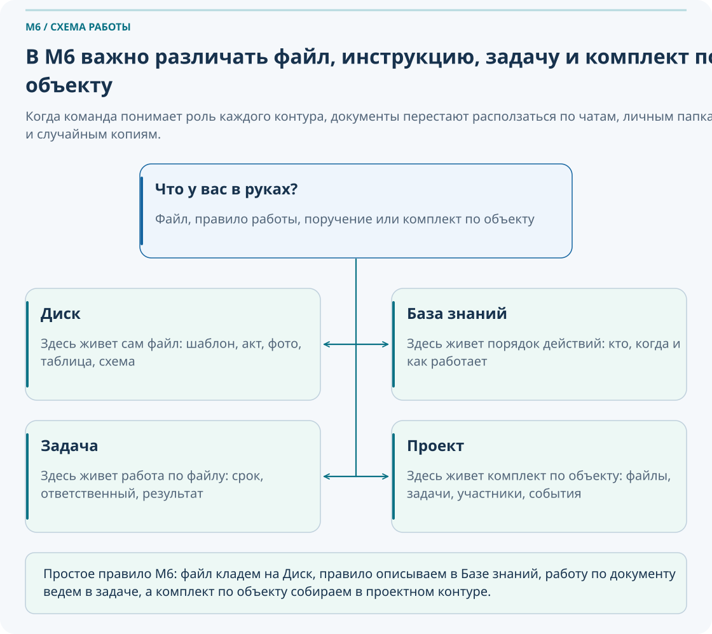
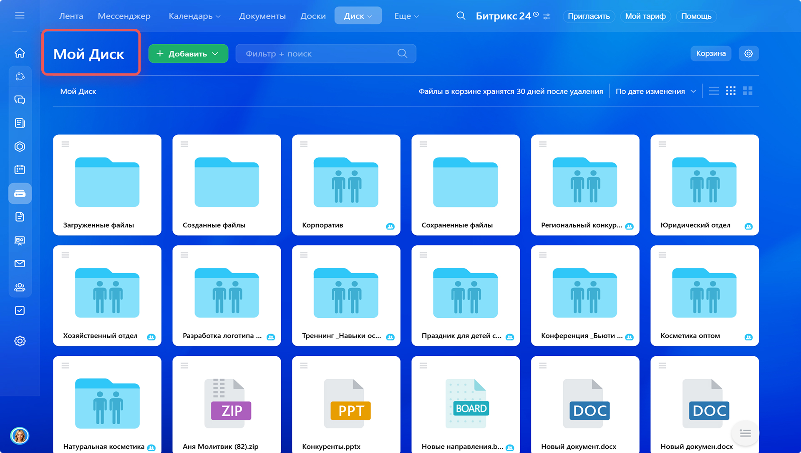
Возьмите 5 типовых материалов и распределите их: файл на Диске, статья в Базе знаний, задача или комплект проекта.
Найдите один пример, где в вашей работе файл лежит не там, где должен, и объясните последствия.
Сформулируйте для своей команды короткое правило: что хранится на Диске, а что описывается в Базе знаний.
2. Структура Диска: куда положить файл
Полезный Диск — это не просто набор папок. Это система, где сотрудник быстро понимает, куда положить файл и где искать нужный комплект по объекту, шаблон или личный черновик.
| Тип материала | Где хранить |
|---|---|
| Эталонный шаблон акта | Общий Диск → Шаблоны |
| Заполненный акт по объекту | Диск проекта → Исполнительная документация |
| Черновик личной заметки | Личный Диск |
| Регламент оформления КС-2 | База знаний |
| Фотоотчет по объекту | Диск проекта → Фотоотчеты |
| Временный файл для обсуждения | Задача или чат, затем перенос на Диск проекта |
Плохая файловая структура
- Одна папка «Документы» для всего подряд.
- Шаблоны лежат рядом с рабочими файлами объекта.
- Непонятно, где архив, а где актуальный комплект.
Хорошая файловая структура
- Общий Диск хранит эталоны и общие материалы.
- Диск проекта хранит комплект по конкретному объекту.
- Личный Диск используется только для личных черновиков.
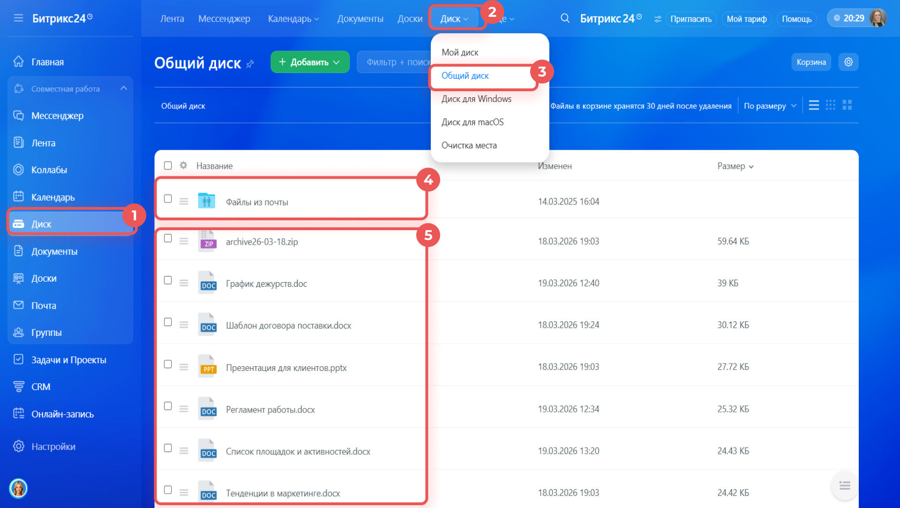
01_Исполнительная документация
Акты, схемы, подписанные формы
02_Фотоотчеты
Фото по этапам и контрольным точкам
03_Входящие материалы
Исходные файлы и материалы от коллег и заказчика
04_Архив
Старые и неактуальные версии, выведенные из работы
Файлы и папки должны называться так, чтобы их можно было понять без открытия. Название вроде акт_финал_новый_2 создает хаос так же быстро, как неправильная папка.
3. Работа с файлами и версиями документов
Границы восстановления. Наличие истории и срок хранения версий зависят от тарифа и настроек портала. Для упражнения создайте учебный документ, сохраните две версии и проверьте доступность истории. Если функция недоступна, опишите порядок восстановления по примеру; не считайте это ошибкой слушателя. История версий не заменяет резервное копирование. Условия хранения версий.
Версии нужны не ради истории, а ради безопасности работы. Они помогают откатиться к корректному состоянию документа, понять, кто что изменял, и перестать плодить файлы с именами final_final_2.
Если документ можно редактировать онлайн в Bitrix24.Docs, это обычно безопаснее и понятнее для совместной работы, чем скачивать и пересылать копии туда-сюда.
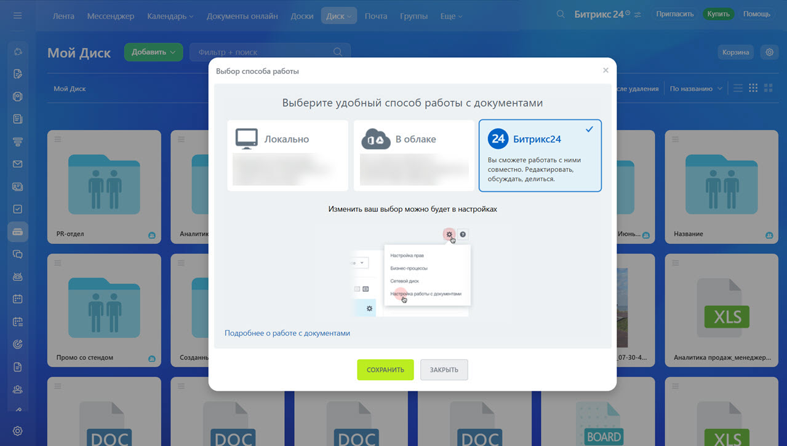
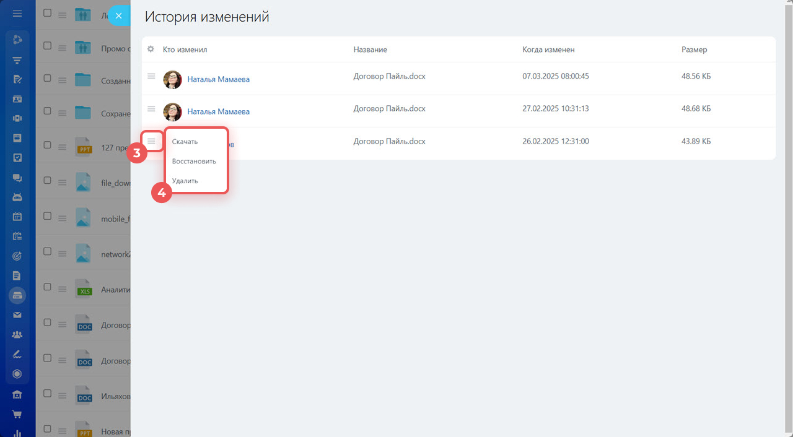
Что важно уметь
- Открыть историю версий.
- Найти корректную версию.
- Восстановить рабочее состояние файла.
- Понять, кто и когда внес изменения.
- Избежать параллельного хаоса через скачанные локальные копии.
Если команда правит один документ несколькими способами, важно быстро определить актуальную версию, вернуть ее в рабочую папку и убрать лишние копии в архив. Иначе сотрудники начинают работать по разным редакциям одного и того же файла.
4. Шаблоны документов: как не портить эталонные формы
Шаблон — это не рабочий документ, а эталон, от которого создаются копии. Если сотрудники редактируют сам эталон, компания быстро теряет единообразие документов.
Шаблоны должны храниться отдельно, быть доступны всем на чтение или копирование и редактироваться ограниченным кругом ответственных.
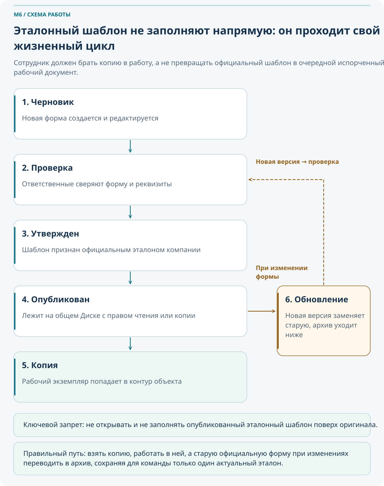
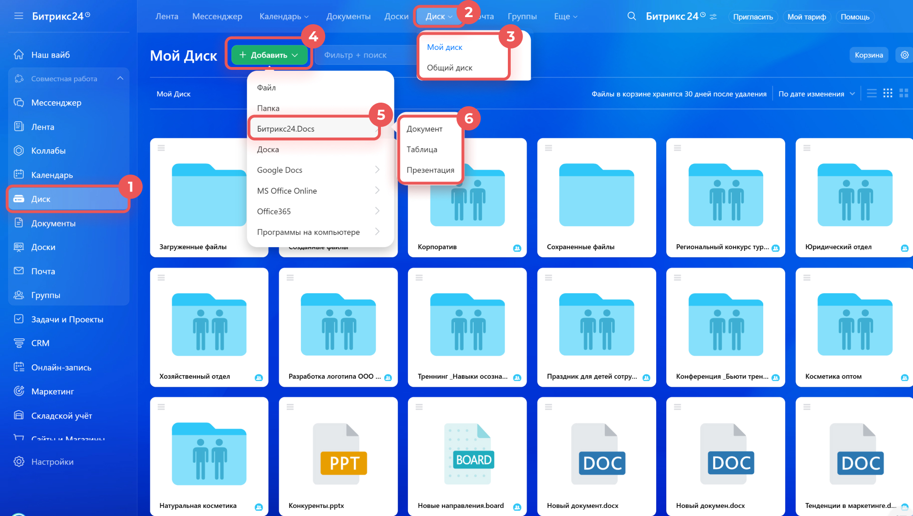
Жизненный цикл шаблона
| Этап | Что происходит |
|---|---|
| Создан | Подготовлен черновик шаблона |
| Проверен | Ответственные проверяют форму и содержание |
| Утвержден | Форма признается официальной для работы |
| Опубликован | Шаблон размещается в общем доступе на чтение или копирование |
| Обновлен | При изменении требований шаблон заменяется новой версией |
| Архивирован | Старая форма выводится из активного использования |
Открыть эталонный шаблон, заполнить его прямо поверх оригинала и сохранить. После этого следующая команда уже получает испорченный эталон вместо чистой формы.
5. Диски проектов и групп: где должен жить комплект по объекту
Если документы относятся к конкретному объекту или проекту, их основной дом — Диск проекта. Это помогает связать файлы с задачами, участниками и управленческой логикой работы.
Один объект — один основной Диск проекта. Общий Диск хранит эталоны и общие материалы, а Диск проекта хранит рабочий комплект по конкретному объекту.
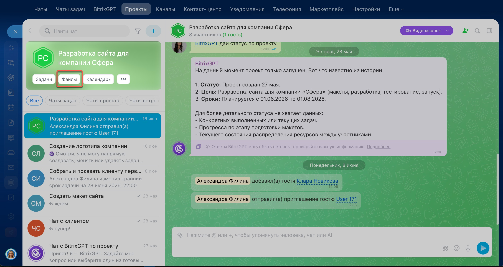
| Когда использовать | Общий Диск | Диск проекта |
|---|---|---|
| Эталонные формы и универсальные шаблоны | Да | Нет, только копии при необходимости |
| Рабочие документы по объекту | Нет | Да |
| Фотоотчеты, схемы, комплект сдачи | Нет | Да |
Найдите Общий Диск и Диск проекта. Определите, какие типы материалов должны жить в каждом из них.
Добавьте ссылку на файл из Диска проекта в задачу по этому объекту.
Опишите, что должно произойти с папками и комплектом документов после завершения проекта.
6. База знаний: как хранить инструкции, а не файлы
Откройте отдельный раздел База знаний 2.0. Если раздел отсутствует, уточните тариф и права у администратора.
- При наличии прав нажмите плюс в левой панели, выберите создание базы, задайте название и доступ.
- Создайте учебный документ с инструкцией и вложенный документ; проверьте структуру разделов.
- Передайте ссылку коллеге и проверьте права просмотра. При отсутствии раздела подготовьте текст и структуру инструкции без публикации.
Интерфейс и доступность Базы знаний 2.0; Создание базы и документов.
База знаний полезна там, где сотруднику нужно не скачать файл, а понять порядок действий. Она снижает число повторяющихся вопросов и помогает onboarding новых коллег.
Когда путают Базу знаний и Диск
- Инструкции лежат как документы без структуры.
- Сотрудник открывает файл, но не понимает порядок действий.
- Невозможно быстро проверить актуальность регламента.
Когда База знаний используется правильно
- Статья объясняет, что делать и когда применять правило.
- В статье есть ссылки на шаблоны и папки Диска.
- У статьи есть владелец и дата последней проверки.
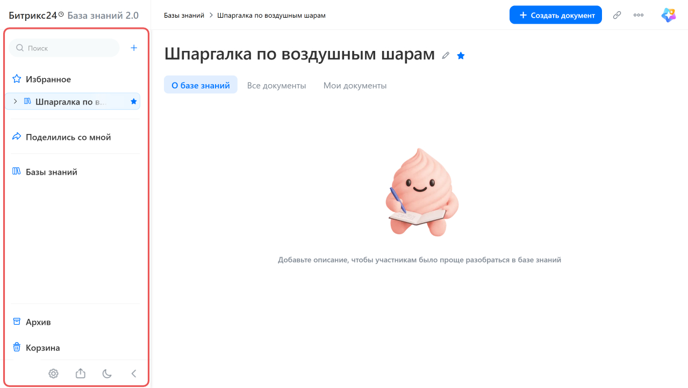
- Регламенты
- Шаблоны отчетов
- Инструкции по объектам
- Онбординг
Как хранить документы по объекту
Шаблон статьи
7. Права доступа: кто что может видеть и менять
Доступы должны помогать работе, а не открывать все всем подряд. В M6 важно дать пользователю базовую рабочую матрицу, а не только перечислить уровни прав.
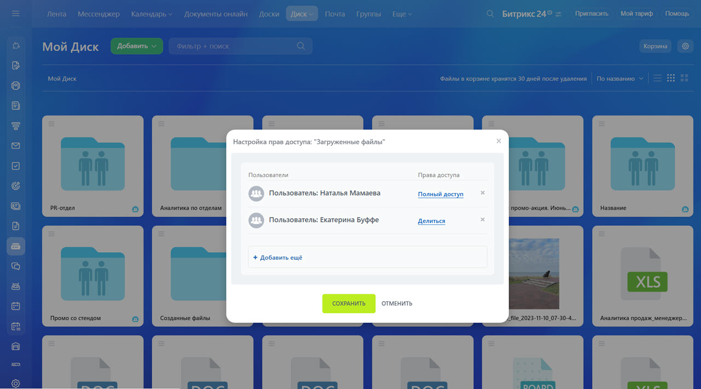
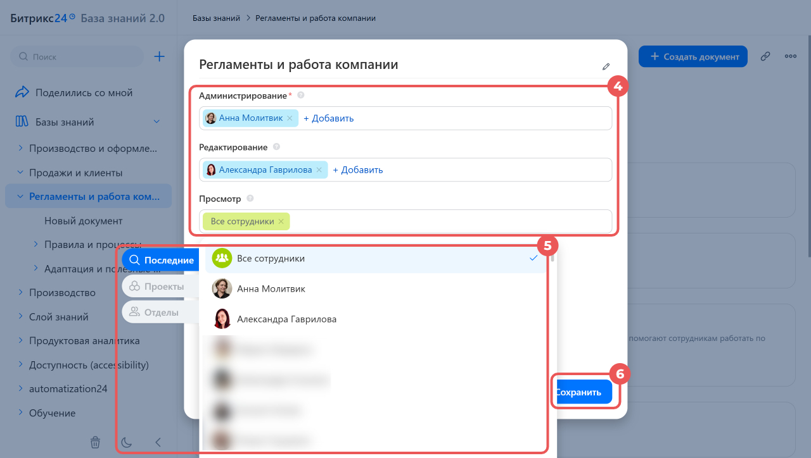
Read
Просмотр без изменения. Подходит для большинства сотрудников, которым нужно пользоваться материалом, но не менять его.
Add
Можно добавлять новые файлы или материалы, но не всегда нужно разрешать менять весь раздел целиком.
Edit
Подходит тем, кто реально ведет документы и отвечает за актуальность содержимого.
Share / Full access
Только для ограниченного круга ответственных, иначе доступы быстро становятся хаотичными.
Если сотруднику нужен доступ только к одному файлу или одной папке, не надо выдавать ему доступ ко всему Диску проекта.
Откройте файл или папку и определите, какой уровень доступа нужен обычному участнику проекта.
Составьте простую матрицу: кто читает, кто загружает, кто редактирует, кто управляет доступами.
Найдите папку, где права выданы слишком широко, и предложите, как сделать доступ безопаснее и точнее.
8. Сквозная практика: «Документооборот по новому объекту»
Этот маршрут проходит через весь модуль и связывает разрозненные темы в один рабочий сценарий.
Создан новый объект
Появляется проект и команда понимает, что документы должны храниться в едином контуре.
Определяем место хранения
Формируется решение: что идет на Общий Диск, а что на Диск проекта.
Создаем структуру папок
На Диске проекта собирается типовая структура по объекту.
Проверяем шаблоны
В Общем Диске находятся или актуализируются эталонные формы.
Копируем в контур объекта
Шаблоны переносятся в рабочий комплект объекта как копии, а не как редактирование эталона.
Работаем с версиями
Документы редактируются онлайн, а при ошибке используется история версий.
Настраиваем доступы
Права выдаются по ролям, а не «всем на все».
Создаем статью Базы знаний
В статье фиксируются правила хранения, ссылки на папки, шаблоны и инструкции.
9. Что делать, если…
Если неясно, куда положить файл
Определите: это шаблон, рабочий документ, инструкция, черновик или комплект по объекту. После этого правило выбора места хранения обычно становится очевидным.
Если нашли несколько версий одного документа
Определите актуальную версию, сохраните ее на правильном Диске, лишние копии перенесите в архив и по возможности зафиксируйте правило совместного редактирования для команды.
Если в документ внесли неправильные изменения
Откройте историю версий и восстановите корректную версию. После этого выясните, была ли проблема в доступах, порядке работы или неверном использовании шаблона.
Если сотрудник не видит файл или папку
Проверьте права доступа к файлу, папке или Диску. Выдавайте доступ только в нужном объеме, а не ко всему проектному разделу без необходимости.
Если шаблон устарел
Сообщите ответственному, обновите эталон, старую форму переместите в архив и дайте команде понятный сигнал, что теперь актуальна новая версия.
Если сотрудники постоянно спрашивают одно и то же
Проверьте, нет ли потребности в статье Базы знаний. Если вопрос повторяется, значит знания не закреплены в удобной форме.
10. Типичные ошибки новичков
Хранить рабочие документы по объекту в личном Диске, а не в проектном контуре.
Редактировать эталонный шаблон вместо создания его копии для работы.
Плодить копии документа с приставками final, final2, последний вместо работы с версиями.
Хранить инструкцию как файл на Диске, хотя ей нужна статья Базы знаний с логикой использования.
Выдавать слишком широкий доступ к папкам и шаблонам.
Не назначать владельцев шаблонов и разделов Базы знаний, из-за чего материалы быстро устаревают.
11. Самопроверка
Вопросы ниже проверяют, понимаете ли вы рабочую логику M6, а не только названия разделов интерфейса.
Вопросы
- Чем Общий Диск отличается от личного?
- Где должен храниться эталонный шаблон акта?
- Как правильно использовать шаблон, чтобы не испортить эталон?
- Зачем нужна история версий?
- Когда документ должен лежать на Диске проекта, а не в общем разделе?
- Чем статья Базы знаний отличается от файла на Диске?
- Зачем нужен владелец шаблона или раздела Базы знаний?
- Почему нельзя выдавать полный доступ ко всему Диску проекта каждому участнику?
- Что делать, если нашли несколько версий одного документа?
- Как связаны Диск, задача, проект и База знаний в реальной работе?
Проверить свои ответы
- Общий Диск хранит корпоративные и общие материалы, личный — личные черновики и индивидуальные файлы сотрудника.
- На Общем Диске в разделе шаблонов или другой специально выделенной эталонной зоне.
- Создать копию или рабочий экземпляр и уже его редактировать в контуре объекта.
- Чтобы видеть, кто и когда менял документ, и при необходимости восстановить корректную версию.
- Когда документ относится к конкретному объекту, этапу или комплекту проектной документации.
- Статья объясняет порядок действий и правила, а файл хранит сам документ или форму.
- Чтобы материалы оставались актуальными, проверялись и своевременно обновлялись.
- Потому что доступ должен соответствовать роли и снижать риск случайных или лишних изменений.
- Определить актуальную, восстановить ее в правильном месте и убрать лишние копии в архив.
- Диск хранит файл, задача фиксирует работу по нему, проект собирает контур объекта, а База знаний объясняет порядок действий.
12. Итоговое практическое задание
Сценарий: компания запускает новый объект «ПС-110кВ Учебная». Нужно организовать хранение документов, шаблонов и инструкций так, чтобы команда быстро находила актуальные материалы и не портила эталонные формы.
- Определите, какие материалы должны храниться на Общем Диске, а какие на Диске проекта.
- Настройте Диск проекта.
- Создайте базовую структуру папок по объекту.
- Определите, где будет храниться архив.
- Создайте папку с шаблонами объекта.
- Скопируйте туда 3–5 актуальных шаблонов.
- Настройте базовые права доступа.
- Откройте историю версий и восстановите предыдущую версию учебного документа, если это позволяет тариф и настройка истории; иначе опишите действия по примеру.
- Создайте статью Базы знаний «Как хранить документы по объекту».
- Добавьте в статью ссылки на папки и шаблоны.
- Сформулируйте правило для команды: где файл, где инструкция, где задача, где комплект объекта.
Критерии успешного прохождения
- Сотрудник понимает разницу между общим, групповым, проектным и личным Диском.
- Сотрудник умеет построить базовую структуру хранения по объекту.
- Сотрудник умеет открыть и восстановить версию документа.
- Сотрудник понимает, как использовать шаблон без изменения эталона.
- Сотрудник умеет создать базовую статью Базы знаний со ссылками на нужные материалы.
- Сотрудник понимает базовую логику прав доступа.
- Сотрудник связывает Диск, задачу, проект и Базу знаний в один рабочий контур.